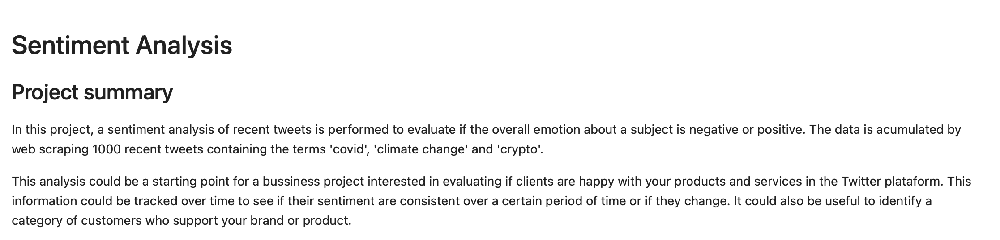

About Me
I have more than five years of experience working with data analysis at CERN. I am enthusiastic about solving business problems using Data Science and Machine Learning. I am constantly learning, and always looking to improve.
Professional Experience
- Research assistant at École Technique Fédérale de Lausanne (EPFL), 2017-2021
- Visiting Ph.D student at European Center for Nuclear Research (CERN), 2014-2016
Education
Projects
Sentiment Analysis
Skills: Web Scrapping, ETL, Pandas, NLP, Matplotlib
A sentiment analysis of recent tweets is performed to evaluate if the overall emotion about a subject is negative or positive. The data is acumulated by web scraping 1000 recent tweets containing the terms 'covid', 'climate change' and 'crypto'. This can be a valuable tool to analyse the overall emotion of a product, service or brand given some textual reviews for example.

Exploratory Data Analysis
Skills: EDA, Pandas, Matplotlib, Numpy
In this project, I perform EDA on COVID-19 clinical trials data provided by ClinicalTrials.gov database. I investigate information about age groups, gender, location, number of participants, trials' status, and average time to complete the trials.
Linear Regression
Skills: EDA, Scikit-learn, Pandas, Matplotlib
What can we discover using Linear Regression? In this project, Linear Regression is used to determine the best features that define the best tennis players. The data provides information about the men’s professional tennis league from the top 1500 ranked players in the Association of Tennis Professionals.
Contact